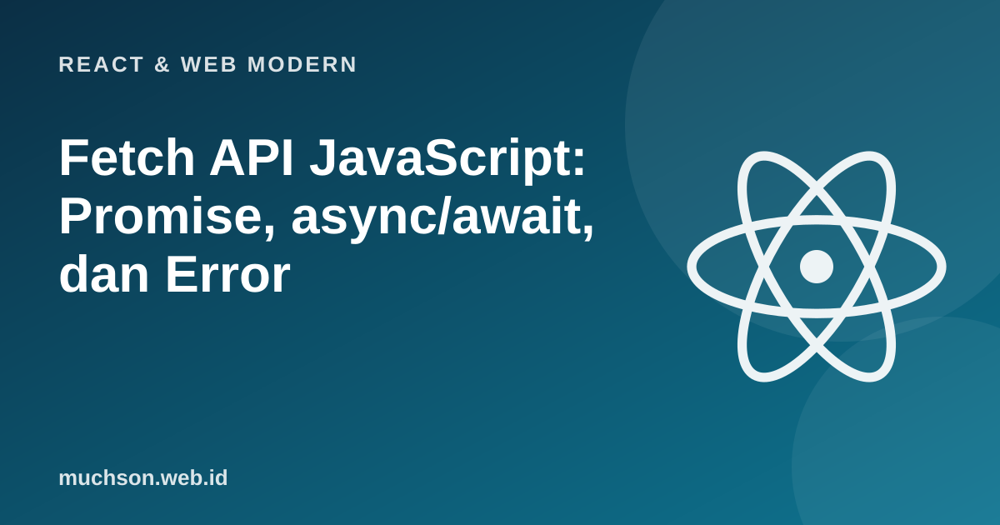

Beranda › Artikel › React & Web Modern
React & Web ModernFetch API JavaScript: Promise, async/await, dan Error
Hampir semua aplikasi web modern bergantung pada data dari server. Di JavaScript, itu berarti memahami operasi asinkron: pekerjaan yang selesai nanti, sementara program terus berjalan. Promise dan async/await adalah cara menuliskannya agar terbaca, dan fetch adalah pintu menuju API. Kesalahan terbesar pemula: mengira fetch otomatis melempar galat pada status 404.
Sebaiknya sudah paham: fungsi JavaScript, JSON dasar

Setelah membaca dan mencoba materi ini, Anda mampu:
- menjelaskan mengapa operasi jaringan bersifat asinkron
- memakai Promise, then/catch, dan async/await
- memanggil fetch, membaca JSON, dan memeriksa response.ok
- menangani galat jaringan, status HTTP, dan JSON rusak
- menjalankan permintaan paralel dan memberi timeout
Mengapa asinkron
JavaScript menjalankan kode Anda pada satu utas. Bila permintaan jaringan menahan program sampai selesai, halaman akan membeku. Karena itu operasi lambat (jaringan, timer, berkas) dimulai lalu dilanjutkan nanti, saat hasilnya siap, melalui event loop.
console.log('1. mulai');
setTimeout(() => console.log('3. dari timer (setelah 0 ms, tetapi tetap NANTI)'), 0);
Promise.resolve().then(() => console.log('2b. microtask (Promise) berjalan sebelum timer'));
console.log('2. selesai kode sinkron');1. mulai
2. selesai kode sinkron
2b. microtask (Promise) berjalan sebelum timer
3. dari timer (setelah 0 ms, tetapi tetap NANTI)Promise: nilai yang datang nanti
Promise memiliki tiga keadaan: pending (menunggu), fulfilled (berhasil dengan nilai), atau rejected (gagal dengan galat).
const tunggu = (ms, nilai, gagal = false) =>
new Promise((ok, tolak) => setTimeout(() => (gagal ? tolak(new Error(nilai)) : ok(nilai)), ms));
tunggu(20, 'data pengguna')
.then(data => { console.log('berhasil:', data); return data.toUpperCase(); })
.then(besar => console.log('diubah :', besar))
.catch(galat => console.log('gagal :', galat.message))
.finally(() => console.log('selesai (selalu berjalan)'));
tunggu(10, 'server error', true)
.then(d => console.log('tidak sampai sini', d))
.catch(g => console.log('ditangkap:', g.message));ditangkap: server error
berhasil: data pengguna
diubah : DATA PENGGUNA
selesai (selalu berjalan)async/await: kode asinkron yang terbaca seperti sinkron
const tunggu = (ms, nilai, gagal = false) =>
new Promise((ok, tolak) => setTimeout(() => (gagal ? tolak(new Error(nilai)) : ok(nilai)), ms));
async function ambilProfil(id) {
try {
const pengguna = await tunggu(15, { id, nama: 'Ani' }); // menunggu tanpa memblokir program lain
const pesanan = await tunggu(15, [101, 102]);
return { ...pengguna, pesanan };
} catch (galat) {
console.log('galat tertangkap:', galat.message);
throw galat;
}
}
(async () => {
console.log(await ambilProfil(7));
try {
await tunggu(5, 'koneksi putus', true);
} catch (g) { console.log('try/catch bekerja dengan await:', g.message); }
})();{ id: 7, nama: 'Ani', pesanan: [ 101, 102 ] }
try/catch bekerja dengan await: koneksi putusfetch: jebakan status HTTP
Promise dari fetch hanya ditolak bila jaringan gagal (tidak ada koneksi, DNS gagal). Status 404 atau 500 tetap dianggap "berhasil". Periksa response.ok (true untuk status 200–299) sebelum membaca data.
const http = require('node:http');
// server kecil di komputer ini untuk mendemonstrasikan fetch dengan aman
const server = http.createServer((req, res) => {
if (req.url === '/ok') { res.setHeader('Content-Type', 'application/json'); res.end(JSON.stringify({ nama: 'Ani', umur: 20 })); }
else if (req.url === '/rusak') { res.setHeader('Content-Type', 'application/json'); res.end('{bukan json'); }
else if (req.url === '/lambat') { setTimeout(() => res.end('terlambat'), 500); }
else { res.statusCode = 404; res.end('tidak ada'); }
});
async function ambil(url) {
const respons = await fetch(url);
if (!respons.ok) throw new Error('HTTP ' + respons.status + ' ' + respons.statusText); // 4xx/5xx tidak otomatis galat
return respons.json();
}
server.listen(0, async () => {
const dasar = 'http://127.0.0.1:' + server.address().port;
for (const jalur of ['/ok', '/tidak-ada', '/rusak']) {
try { console.log(jalur.padEnd(11), '->', JSON.stringify(await ambil(dasar + jalur))); }
catch (g) { console.log(jalur.padEnd(11), '-> galat:', g.name + ':', g.message.slice(0, 40)); }
}
// jaringan gagal total: port tidak ada
try { await fetch('http://127.0.0.1:1/'); } catch (g) { console.log('jaringan gagal -> galat:', g.name); }
server.close();
});/ok -> {"nama":"Ani","umur":20}
/tidak-ada -> galat: Error: HTTP 404 Not Found
/rusak -> galat: SyntaxError: Expected property name or '}' in JSON at
jaringan gagal -> galat: TypeErrorTimeout dan pembatalan dengan AbortController
const http = require('node:http');
const server = http.createServer((req, res) => setTimeout(() => res.end('terlambat'), 800));
async function ambilDenganBatas(url, batasMs) {
const kontrol = new AbortController();
const id = setTimeout(() => kontrol.abort(), batasMs);
try {
const r = await fetch(url, { signal: kontrol.signal });
return await r.text();
} catch (g) {
if (g.name === 'AbortError') throw new Error('Permintaan melebihi ' + batasMs + ' ms');
throw g;
} finally {
clearTimeout(id);
}
}
server.listen(0, async () => {
try { console.log(await ambilDenganBatas('http://127.0.0.1:' + server.address().port, 100)); }
catch (g) { console.log('galat:', g.message); }
server.closeAllConnections?.();
server.close();
});
// Alternatif modern: fetch(url, { signal: AbortSignal.timeout(100) })galat: Permintaan melebihi 100 msPermintaan paralel
const tunggu = (ms, nilai, gagal = false) =>
new Promise((ok, tolak) => setTimeout(() => (gagal ? tolak(new Error(nilai)) : ok(nilai)), ms));
(async () => {
// berurutan: total waktu = jumlah
let t0 = Date.now();
await tunggu(100, 'a'); await tunggu(100, 'b'); await tunggu(100, 'c');
console.log('berurutan :', Math.round((Date.now() - t0) / 100) * 100, 'ms');
// paralel: total waktu = yang terlama
t0 = Date.now();
const hasil = await Promise.all([tunggu(100, 'a'), tunggu(100, 'b'), tunggu(100, 'c')]);
console.log('paralel :', Math.round((Date.now() - t0) / 100) * 100, 'ms', hasil);
// Promise.all gagal bila satu gagal; allSettled melaporkan semuanya
const semua = await Promise.allSettled([tunggu(10, 'ok'), tunggu(10, 'gagal', true)]);
console.log(semua.map(s => s.status + ':' + (s.value ?? s.reason.message)));
})();berurutan : 300 ms
paralel : 100 ms [ 'a', 'b', 'c' ]
[ 'fulfilled:ok', 'rejected:gagal' ]1. Tulis fungsi ambilJSON(url) yang melempar galat jelas bila status bukan 2xx.
async function ambilJSON(url) { const r = await fetch(url); if (!r.ok) throw new Error("HTTP " + r.status); return r.json(); }2. Mengapa await di dalam for-of berurutan lebih lambat dari Promise.all?
3. Apa bedanya Promise.all dan Promise.allSettled?
4. Apa yang terjadi bila lupa await pada async function?
- Operasi jaringan asinkron; event loop menjalankan kode sinkron, microtask, lalu callback.
- Promise: pending, fulfilled, rejected; async/await membuatnya terbaca linear.
- fetch hanya menolak bila jaringan gagal; periksa response.ok untuk status HTTP.
- Tangani JSON rusak, beri timeout dengan AbortController, dan paralelkan dengan Promise.all.
Tanya jawab
Apa bedanya fetch dan axios?
Apa itu CORS dan mengapa fetch gagal di browser?
Bolehkah memakai await di tingkat atas?
Referensi
- MDN: Using the Fetch API
- MDN: Using Promises
- MDN: async function
- javascript.info: Promises, async/await